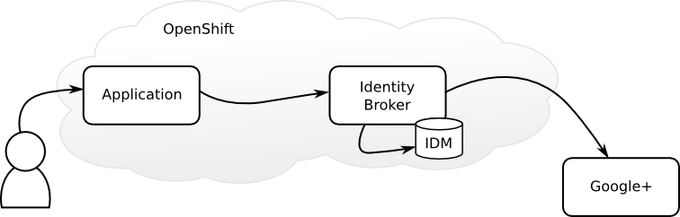
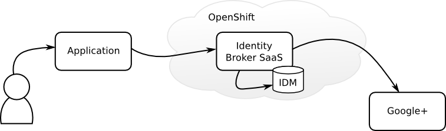
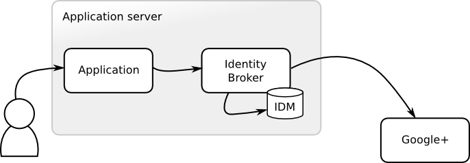

EventJuggler Services (EJS) contains a set of services to make it simpler to create modern web applications. Currently the focus is on the Identity Broker which aims to make it simple to provide authentication for web applications using traditional logins or with external identity providers such as Google, Facebook and Twitter. There is also an Activities service, which logs page views and allows retrieving basic statistics such as popular pages and related pages.
In fact, all an application developer has to do to add authentication to an application is to register and configure the application with EJS. A simple link to login is then added to the application. Alternatively, the login form can also be embedded into the application with the supplied JavaScript. Finally, user information is retrieved from a simple REST interface or through the provided PicketLink integration. These steps are the same for a locally installed Identity Provider, or one deployed to a public or private cloud.
Later, the application developer can add additional identity providers without touching the application. All that is required is to configure the additional identity providers through the Admin console. If EJS is used as a SaaS the application developer has the additional benefit of not having to maintain it. The developer doesn't have to worry about securely storing users or identity providers changing their APIs, these concerns and a lot more are dealt with by the SaaS provider.
The Admin console makes it simple to manage the services, through the Admin console it is currently possible to:
This guide describes three alternatives to experimenting with EJS:
The simplest way to experiment with EJS is to use the live version on OpenShift. There's also two example applications deployed here to try out login with the Identity Broker.
The diagram above shows the deployment of the Identity Broker and the application for this scenario. Both the application and the Identity Broker are deployed to the same application server on OpenShift. If the user logs in with the standard login the Identity Broker uses the IDM store to authenticate the user. Or if the user wants to login with another identity provider, in this case Google+, the Identity Broker uses Google+ to authenticate the user.
Open ${ejs.saas.url}/ejs-admin/ and login with username ${ejs.saas.root.username} and password ${ejs.saas.root.password}. Navigate to Applications and select EventJuggler from the side menu. This shows the configuration for the EventJuggler application. In the table under Identity Providers two identity providers have been configured, Google and My Dummy Social Site. Adding the key and value for the providers is all that is required to add login with an additional identity provider to an application.
Now open ${ejs.saas.url}/eventjuggler/ and click on Register. Fill in the details of the form and submit, then login. Go back to the Admin console and navigate to Users. Observe that the user you just created is listed in the table of users. You can edit and delete the user from the Admin console if you'd like.
If you have a Google account, go back to EventJuggler logout, then click on Login. Select the G+ icon. This redirects you to Google to authorize the application to access details about your account. If you accept you'll be logged in to EventJuggler using your Google account.
There's also a more basic example application available at ${ejs.saas.url}/ejs-examples-jsf/index.jsf. This application lets you login by clicking Login, it also displays the login form embedded on the page. Once logged in all it does is display the name of the user.
This section takes a look at how to configure an application with an external Identity Broker, in this case EJS has already been deployed to OpenShift. It then describes how to deploy the application to a locally running application server.
The diagram above shows the deployment of the Identity Broker and the application for this scenario. In this case the Identity Broker is deployed to OpenShift and used as a SaaS, while the application is deployed to a locally installed application server.
First you need to install an application server locally. This application server is only used for the sample application. Download and extracted WildFly ${version.org.wildfly}. Once installed start the server by running:
bin/standalone.sh
Open the Admin console (${ejs.saas.url}/ejs-admin/), click on Register (if you're already logged in, logout first). Fill in the form to register a new user and login. Alternatively, if you have a Google account you can login with that directly instead of registering a user first. The Admin console uses the Identity Broker to authenticate users, so login works in the same way as it does for applications.
Once logged in navigate to Applications and select Add Application. Fill in the form with the following details:
Click Save, then copy the Key into the input field below (this will update the documentation to include your application key). The Secret is not currently used so ignore that for now.
Now clone the example application from Github by running:
git clone https://github.com/eventjuggler/eventjuggler-services-examples.git cd eventjuggler-services-examples
Then build and install the example with:
mvn clean install jboss-as:deploy -Dejs.url=${ejs.saas.url} \
-Dejs.appKey=
Now open http://localhost:8080/ejs-examples-jsf/index.jsf and select Login. You can either login with the user you created when registering the application or register a new user by clicking on Register. The next sections will describe how to enable additional identity providers.
The Dummy Provider is a mock identity provider that uses PicketLink IDM to authenticate users. To enable it for the example application, open the Admin console, login and navigate to Applications.
Click on Example in the sidebar on the left. Then select My Dummy Social Site in the drop-down under Identity Providers and click Add Provider. Add a random value for Key and Secret for the Dummy Provider (the Dummy Provider is just a mock so it doesn't use these values). Then click Save Changes.
Open http://localhost:8080/ejs-examples-jsf/index.jsf and select Login. Now there's a DS icon, by clicking on this you are redirected to the Dummy Provider to authorize the application to authenticate using your account with the dummy social provider. The Dummy Provider uses the same PicketLink IDM store as the standard login, so you can login with the username and password for the user you previously registered (or if you logged in with Goolge use username Foo and password bar).
To enable Google login open https://code.google.com/apis/console/. From the drop-down menu select Create.
Use any name that you'd like, click Create Project, select API Access and click on Create an OAuth 2.0 client ID.
Use any product name you'd like and leave the other fields empty, then click Next. On the next page select Web application as the application type. Click more options next to Your site or hostname. Fill in the form with the following values:
Click on Create client ID. Take a note of the Client ID and Client Secret as you will need these when adding the Google provider to your application in the Admin console.
Open the Admin console, then select the Example application you created earlier. Select the Google provider and click Add Provider. Insert Client ID from Google into Key and Client secret into Secret. Click Save.
Open http://localhost:8080/ejs-examples-jsf/index.jsf and select Login. Now there's an additional icon in the login form which allows you to login using your Google account.
This section takes a look at how to install the Identity Broker locally. It then describes how to configure an application in the local Idenity Broker, and how to deploy an application to the same application server as the Identity Broker is deployed to.
The diagram above shows the deployment of the Identity Broker and the application for this scenario. In this case the Identity Broker and the application is deployed locally to the same application server.
This section provides instructions on how to install the Identity Broker from the distribution. If you want to build and install it from the source, clone it from https://github.com/eventjuggler/eventjuggler-services and look at the README.md for instructions.
Download and extract ${ejs.dist.download.url}. This archive contains WildFly ${version.org.wildfly} with EJS and PicketLink 3 IDM subsystem. Once installed, start it by running:
bin/standalone.sh
Open the Admin console (http://localhost:8080/ejs-admin), click on Register. Fill in the form to register a new user and login.
The Admin console uses the Identity Broker to authenticate users, which means it can also authenticate users with other identity providers such as Google. This has to be configured first though, if you want to try this out you can login using username root and password root. Then follow the instructions under Enable Google Provider, but configuring the system application instead of Example.
Once logged in navigate to Applications and select Add Application. Fill in the form with the following details:
Click Save, then copy the Key into the input field below (this will update the documentation to include your application key). The Secret is not currently used so ignore that for now.
Now clone the example application from Github by running:
git clone https://github.com/eventjuggler/eventjuggler-services-examples.git cd eventjuggler-services-examples
Then build and install the example with:
mvn clean install jboss-as:deploy -Dejs.appKey=
Now open http://localhost:8080/ejs-examples-jsf/index.jsf and select Login. You can either login with the user you created when registering the application or register a new user by clicking on Register. The next sections will describe how to enable additional identity providers.
The Dummy Provider is a mock identity provider that uses PicketLink IDM to authenticate users. To enable it for the example application, open the Admin console, login and navigate to Applications.
Click on Example in the sidebar on the left. Then select My Dummy Social Site in the drop-down under Identity Providers and click Add Provider. Add a random value for Key and Secret for the Dummy Provider (the Dummy Provider is just a mock so it doesn't use these values). Then click Save Changes.
Open http://localhost:8080/ejs-examples-jsf/index.jsf and select Login. Now there's a DS icon, by clicking on this you are redirected to the Dummy Provider to authorize the application to authenticate using your account with the dummy social provider. to login. As the Dummy Provider uses the same PicketLink IDM store as the standard login you can login with the username and password you previously used.
To enable Google login open https://code.google.com/apis/console/. From the drop-down menu select Create.
Use any name that you'd like, click Create Project, select API Access and click on Create an OAuth 2.0 client ID.
Use any product name you'd like and leave the other fields empty, then click Next. On the next page select Web application as the application type. Click more options next to Your site or hostname. Fill in the form with the following values:
Click on Create client ID. Take a note of the Client ID and Client Secret as you will need these when adding the Google provider to your application in the Admin console.
Open the Admin console, then select the Example application you created earlier. Select the Google provider and click Add Provider. Insert Client ID from Google into Key and Client secret into Secret. Click Save.
Open http://localhost:8080/ejs-examples-jsf/index.jsf and select Login. Now there's an additional icon in the login form which allows you to login using your Google account.